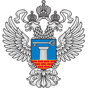

Документ утвержден: Приказ Минстроя России от 09.12.2020 № 756/пр
Минстрой России: согласование планов, доведение объема субсидий, рассмотрение обоснований.
Руководитель учреждения: формирование проекта, направление в Минстрой, утверждение после согласования.
ФКУ «Объединенная дирекция»: экспертиза и заключение.
Наблюдательный совет: рассмотрение и заключение по плану.
| Документ / информация | Минстрой России | Руководитель учреждения | ФКУ «Объединённая дирекция» | Наблюдательный совет | Пункт Порядка |
|---|---|---|---|---|---|
| План ФХД | Согласовывает | Утверждает после рассмотрения Наблюдательным советом и согласования Минстроем | Готовит заключение по согласованию | Рассматривает и даёт заключение | п. 4, п. 13, п. 14 |
| Планы обособленных подразделений | Утверждает План головного и каждого подразделения | п. 5 | |||
| Субсидии из федерального бюджета | Доводит Учреждению | п. 8 | |||
| Проект Плана ФХД + обоснования | Направляет в ФКУ, согласует или отклоняет | Готовит и уточняет проект | Рассматривает и даёт заключение | п. 8, п. 13 |
Изменения допускаются только при наличии оснований (например: возврат дебиторской задолженности, штрафы, исполнение судебных решений).